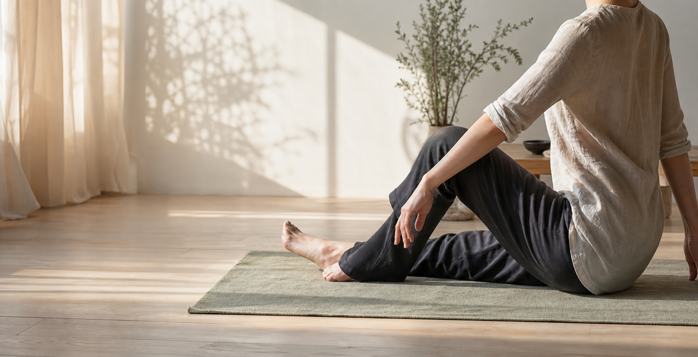

關於這個練習
從「用力變好」轉向「更清楚地感覺」
費登魁斯方法是一種以動作和覺察為核心的身心教育方式。它不要求你模仿標準姿勢， 而是透過小而清楚的動作探索，讓神經系統有機會找到更有效率、更舒服的組織方式。
第一版網站先以初學者能理解的語氣介紹方法、課程形式與常見疑問。等受訓者確認內容後， 可以再補上個人故事、受訓歷程、課程地點與正式聯絡資訊。
什麼是費登魁斯方法
用動作探索，讓身體學會更多可能
這套方法由 Moshe Feldenkrais 發展，常被描述為一種透過動作與自我覺察來改善功能的教育系統。 重點不是追求完美姿勢，而是學習辨認習慣、減少不必要的用力，並在安全範圍內建立更多選擇。
慢下來
透過細緻、可控制的速度，讓身體有時間感覺差異，而不是急著完成動作。
少一點力氣
練習常鼓勵輕柔與舒適，讓你觀察哪裡其實不需要一直出力。
多一些選擇
當動作不只剩一種做法，日常行走、坐下、轉身與休息都可能變得更有彈性。
課程形式
兩種常見的學習方式
團體課
Awareness Through Movement
講師用口語引導一連串溫和動作，學員依照自己的速度探索。課程通常不需要高強度體能， 也不以完成漂亮姿勢為目標。
- 適合第一次接觸者
- 可在線上或實體進行
- 重視感覺、休息與差異
個別課
Functional Integration
一對一課程通常以溫和觸碰與動作回饋進行，協助學員感覺身體不同部位如何互相連結。 實際提供形式需依受訓階段與專業規範確認。
- 更個別化的探索
- 適合有明確動作困擾者詢問
- 不取代醫療診斷或治療
適合誰
如果你想更理解自己的身體
久坐與緊繃感
想用比較溫和的方式重新感覺呼吸、骨盆、脊椎和肩頸的關係。
表演與運動工作者
希望動作更省力、更細緻，並在訓練之外培養身體覺察。
身體好奇者
對正念、動作教育、神經可塑性或自我照顧有興趣。
恢復期或不確定者
若有急性疼痛、疾病或醫療狀況，請先諮詢合格醫療專業人員。
常見問題
第一次接觸前，可以先知道的事
這跟瑜伽或伸展一樣嗎？
不完全一樣。費登魁斯方法通常不追求拉到最遠或維持固定姿勢， 而是用動作探索來增加覺察，讓身體找到更清楚、更少用力的選擇。
我身體很僵硬，也可以參加嗎？
可以先從非常小的動作開始。練習重點是舒適與感覺差異，不是柔軟度比賽。 任何會造成疼痛或不安的動作都應該停下或調整。
這可以治療疼痛或疾病嗎？
這個網站把費登魁斯方法定位為身心教育與動作學習，不提供醫療診斷或療效保證。 若有疼痛、受傷、疾病或正在治療中，請先和醫療專業人員討論。
需要準備什麼？
通常穿著好活動的衣服，準備瑜伽墊或地墊即可。線上課程可再準備毛巾、枕頭或椅子， 依課程內容調整。
聯絡與校稿
想了解體驗課或協助校稿內容
這裡先放佔位資訊。正式上線前，請替換成受訓者確認過的 LINE、Email、Instagram 或表單連結。
Email 待補
LINE 待補
Instagram 待補
預約表單待補